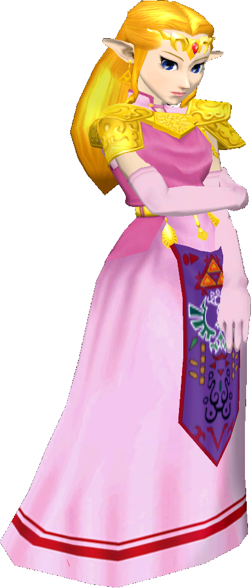

|  | Ranked 22nd of tier list : PRINCESS ZELDA |
| Weight | |
|---|---|
| 12-14th heaviest | |
| Shield stats | |
| Roll lenght | 16th longest |
| Shield size | 6th biggest |
| Grab range | 9th longest |
| Wavedash lenght | 25-26th longest |
| Movement stats | |
| Walking speed | 24-25th fastest |
| Turning speed | 12-14th fastest |
| Running speed | 25-26th fastest |
| Aerial stats | |
| Jump squat | 7 frames (23rd fastest) |
| Short hop | 3-4th highest |
| Aerial speed | 10th fastest |
| First jump height | 19-20th highest |
| Seconde jump height | 26th highest |
| Total jump height | 11-12th highest |
| Average fall speed | 25th fastest |
| Fast falling speed | 24-25th fastest |
| Falling speed | 24-25th fastest |
| Ledge stats | |
| 0-99% ledge roll | 3rd longest |
| 100%+ ledge roll | 4th longest |
| 0-99% ledge attack range | 10th farthest |
| 100%+ ledge attack range | 15th farthest |
| Intangible ledgedash (Optimal/Perfect) | 2 frames |
| Notable players | |
| The Lake | |
| Smashboard forum | |
| http://smashboards.com/forums/zelda.73/ | |
Zelda is 22nd on the tier list, in the F tier. Zeldas positive attributes include an effective KO move with her Lightning Kick, as well as powerful attacks with transcendent priority. Zeldas primary weakness, however, is her poor movement, due to having the slowest dash speed in the game (along with Jigglypuff), slow falling, and air speed, which together with her very high traction results in the shortest wavedash in the game (along with Peach). Additionally, despite Zeldas somewhat long recovery, her recovery is very easily edgeguarded and/or edgehogged. This contributes to Zelda having poor matchups against others, though she does have a few even matchups against those higher than her, such as Dr. Mario.